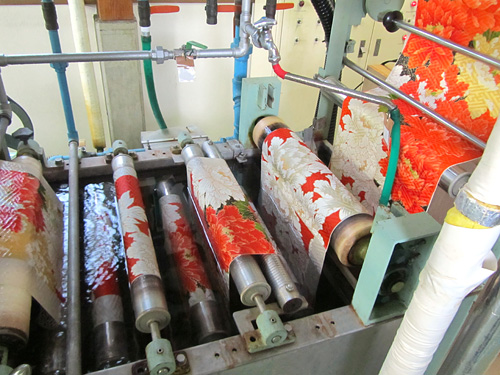
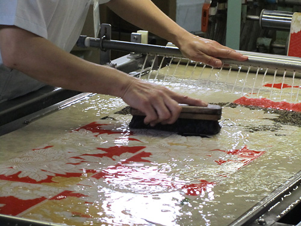
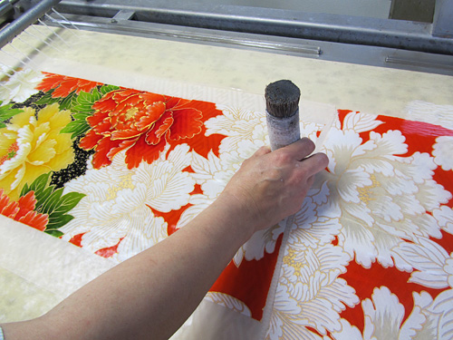
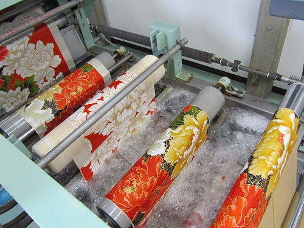
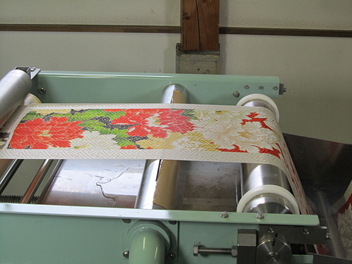
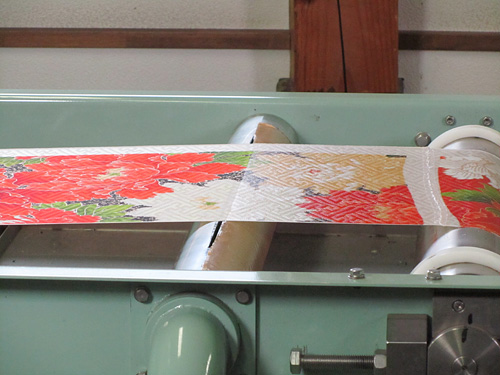

本仕立てのきものを解き、洗剤を用いて水洗いをし汚れを落とすきものの伝統的な洗濯法です。
| 最新鋭の機械を導入し、手のぬくもりをプラスした近代的な洗い張りです。 酵素洗いで絹を優しく守り風合いを保ちます。 << しっかりチェック >>・耐性のチェックをします ・古いきものは弱っている場合があります。事前に耐性をチェックします |
|  |  |  | ||
| 1.色止め酵素洗い | 2.ブラッシング | |||
|  |  |  | ||
| 3.水洗い（薬剤落とし） | 4.柔軟剤＋真空管脱水 | |||
 |
||||
| 5.乾燥 | ||||
＊水洗いなので全体の汚れはすっきりときれいになりますが、きついシミや古い汚れ残りは的確なアドバイスでお見積もりを差し上げます。